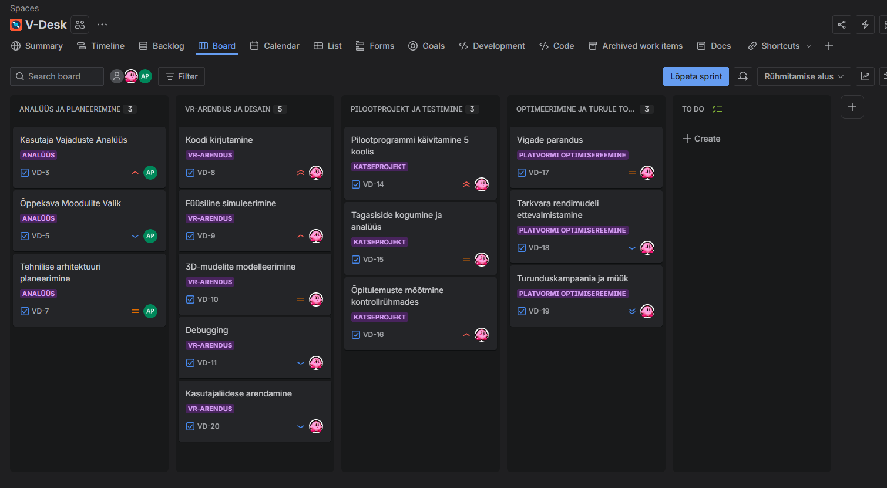
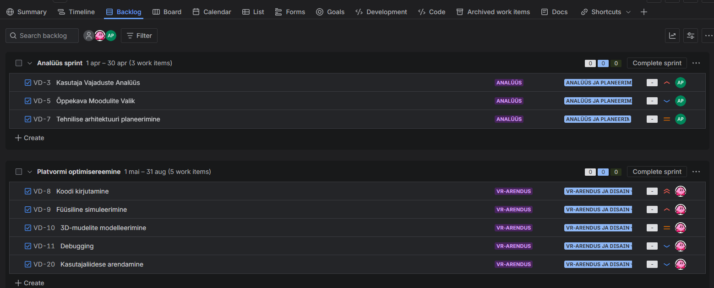

Jira
Atlassian · alates 2002
Lühike ajalugu
Jira lõid Mike Cannon-Brookes ja Scott Farquhar
Atlassiani asutamisel 2002. aastal. Algne eesmärk oli asendada
tülikad e-kirja-põhised vigade jälgimised. Nimi tuleb Jaapani sõnast "Gojira" —
sisemine hüüdnimi konkurendi Bugzilla jaoks. Arendus jätkub aktiivselt tänapäevani.
Peamised funktsioonid
-
Scrum & Kanban tahvlid — taskid liiguvad veergude vahel visuaalselt
-
Issue Tracking — vigade ja ülesannete jälgimine prioriteetide järgi
-
Raportid — Burndown chart, velocity, progressi analüütika
-
Integratsioonid — GitHub, Slack, Figma ja 3000+ rakendust
Pildid (screenshots)
📸

Kanban/Scrum tahvel — To Do, In Progress, Done veerud
📸

SCREENSHOT 3Avatud Issue — Priority, Assignee, Status
📸
 SCREENSHOT 4
SCREENSHOT 4
SCREENSHOT 4
Burndown Chart raportis
📸
 SCREENSHOT 5
SCREENSHOT 5
SCREENSHOT 5
Kalender (Timeline)